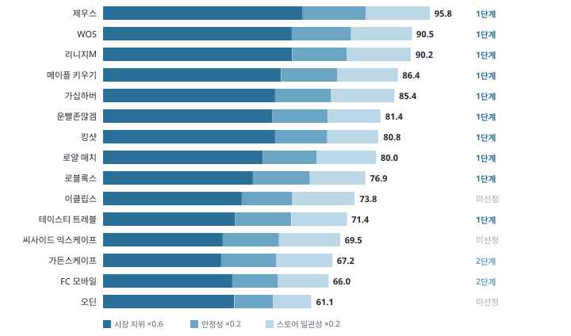
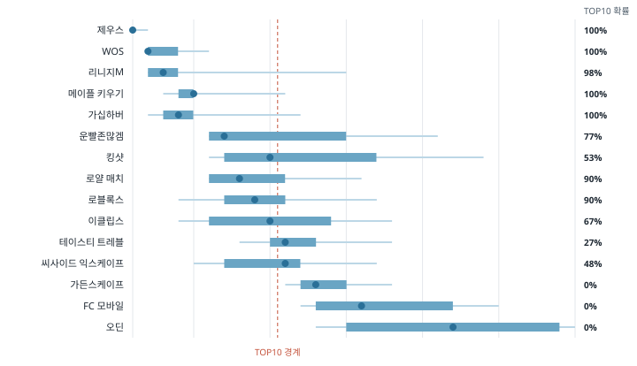
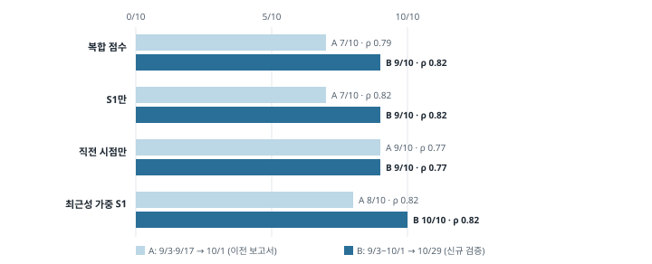
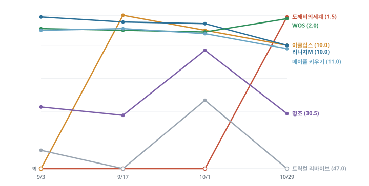
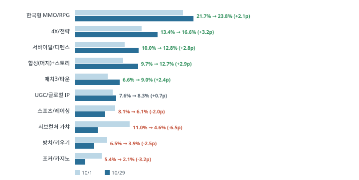

[summary]요약
먼저 플레이할 5종은 ① 제우스 ② WOS ③ 리니지M ④ 메이플 키우기 ⑤ 가십하버입니다. 시장의 10개 장르를 모두 경험하는 최소 목록은 14종, 급등 신호 1종을 더해 최종 15종입니다.
한 달 전(10/1) 데이터로 만든 점수가 10/29 실제 TOP10 중 9개를 맞혔고, 급등 신호로 골랐던 5종은 전부 내려갔습니다. 그래서 급등작은 ‘지금 바로 보고 넘어가는 목록’으로 따로 다룹니다.
94종4시점 · 2개 스토어에서 관측된 게임
9 / 10한 달 뒤 TOP10 적중 (백테스트)
90~100%상위 5종의 TOP5 확률 (가중치 1만 회)
5 / 5이전 급등 신호 게임의 하락
[problem]문제 정의
기획자로서 시장을 이해하려면 직접 플레이해 봐야 하지만, 매출 순위에 오른 게임만 90종이 넘습니다. 시간은 한정돼 있으니 “무엇을, 어떤 순서로, 어느 스토어에서” 할지 근거를 갖고 정해야 했습니다.
- 오래, 꾸준히 높은 게임이 우선이다 — 한 번 반짝한 순위는 시장의 구조를 대표하지 못한다.
- 같은 장르만 여러 개 하면 시장을 넓게 보지 못한다 — 장르 폭도 함께 확보한다.
- 갑자기 오른 게임은 그 순간에만 볼 수 있는 설계가 있다 — 따로 표시한다.
[method]방법
1. 점수 설계
점수 = 0.6 × 시장 지위 + 0.2 × 안정성 + 0.2 × 스토어 일관성
- 시장 지위 — 8개 표의 평균 (47 − 순위). 순위권 밖은 0점.
- 안정성 — 100 − 6σ (순위 표준편차). 관측 4회 미만은 0점으로 두어 ‘아직 모르는 게임’을 구분.
- 스토어 일관성 — 100 − 4g (시점별 구글·iOS 순위 격차 평균).
2. 선정 규칙
- 1단계 — 점수 상위 10종. 단, 한 장르는 2종까지만 넣고 넘치면 다음 순위로 내려 장르 폭을 확보.
- 2단계 — 1단계에 없는 장르를 채우는 대표작 · 비교쌍.
- 3단계 — 시점 간 점수 변화의 robust z ≥ 4 (중앙값과 MAD 기준)인 급등 신호.
- 스토어 — 두 스토어 순위 차가 5계단 이하면 ‘무관’. 5계단은 TOP25 게임 113건의 이동 폭 75백분위에서 정한 노이즈 기준.
3. 검증
- 가중치를 디리클레(1,1,1)로 1만 번 뽑아 순위가 얼마나 흔들리는지 확인 (몬테카를로).
- 점수 변환을 역수 · 로그로 바꿔도 TOP10이 유지되는지 확인.
- 10/1까지의 데이터로 만든 점수가 오지 않았던 10/29를 맞히는지 확인 (백테스트).
[result]결과

권장 플레이 목록 (10/29 기준)
| 단계 | 게임 | 장르 | 점수 | 구글 / iOS | 관찰 포인트 |
|---|---|---|---|---|---|
| 1 | 제우스 | MMO/RPG | 95.8 | 2 / 4 | 성장 압박과 과금 상품 구성 |
| 1 | WOS | 4X/전략 | 90.5 | 3 / 1 | 튜토리얼 이후 동맹 · 전쟁 유도 |
| 1 | 리니지M | MMO/RPG | 90.2 | 9 / 11 | 4시점 연속 하락의 원인 |
| 1 | 메이플 키우기 | 방치/키우기 | 86.4 | 13 / 9 | 방치형 장르 단독 대표 |
| 1 | 가십하버 | 합성+스토리 | 85.4 | 5 / 3 | 에너지와 스토리 해금의 연결 |
| 1 | 운빨존많겜 | 서바이벌/디펜스 | 81.4 | 11 / 6 | 랜덤 요소와 광고 보상 배분 |
| 1 | 킹샷 | 4X/전략 | 80.8 | 4 / 8 | WOS와의 차이 |
| 1 | 로얄 매치 | 매치3/타운 | 80.0 | 7 / 7 | 레벨 난이도 곡선과 부스터 판매 |
| 1 | 로블록스 | UGC/글로벌 IP | 76.9 | 8 / 12 | 플랫폼형 결제 구조 |
| 1 | 테이스티 트레블 | 합성+스토리 | 71.4 | 19 / 13 | 가십하버와의 공통 구조 |
| 2 | 가든스케이프 | 매치3/타운 | 67.2 | 22 / 16 | 로얄 매치와 비교: 꾸미기 요소 |
| 2 | FC 모바일 | 스포츠 | 66.0 | 26 / 21 | 시즌 · 선수 카드 확률형 구조 |
| 2 | 한게임포커 클래식 | 포커/카지노 | 46.9 | 28 / – | 칩 상점과 일일 보상 |
| 2 | 명조 | 서브컬처 가챠 | 42.2 | 14 / – | 가챠 천장, iOS 1위 → 이탈 원인 |
| 3 | 도깨비의세계 | MMO/RPG | 34.0* | 1 / 2 | 출시 초반 과금 · 보상 설계 |
* 관측 4회 미만이라 안정성 점수가 0으로 계산된 참고값입니다. 점수가 낮은 이유는 ‘약해서’가 아니라 ‘아직 데이터가 없어서’입니다.
플레이 예산별로 얼마나 덮는가
| 플레이 수 | 점수 커버 | 장르 | 점수순으로만 골랐다면 |
|---|---|---|---|
| 5종 | 19.4% | 4 / 10 | 동일 |
| 10종 | 35.8% | 7 / 10 | 35.9% · 7장르 |
| 14종 | 44.6% | 10 / 10 | 46.4% · 8장르 |
점수순으로만 고르는 것보다 커버율을 2%p 포기하고 장르 10개를 모두 덮는 쪽을 택했습니다.
[validation]검증
결론은 얼마나 흔들리는가

- 상위 5종의 TOP5 확률: 제우스 100% · WOS 99% · 가십하버 97% · 리니지M 93% · 메이플 키우기 90%.
- 가중치를 바꿔도 TOP10은 평균 8.7 / 10 겹치고, 점수 변환을 바꿔도 TOP10이 10 / 10 그대로였습니다.
한 달 뒤를 맞혔는가 (백테스트)

| 예측 방법 | 순위상관 ρ | TOP10 | TOP5 |
|---|---|---|---|
| 복합 점수 (이 분석) | 0.82 | 9 / 10 | 3 / 5 |
| 시장 지위 점수만 | 0.82 | 9 / 10 | 2 / 5 |
| 직전 시점 순위만 | 0.77 | 9 / 10 | 2 / 5 |
| 최근성 가중 (1:2:3) | 0.82 | 10 / 10 | 2 / 5 |
‘상위 10’은 한 달 단위로 예측되지만, ‘상위 5의 순서’는 어떤 방법으로도 2~3/5에 그쳤습니다. 최근성 가중이 두 번 모두 좋았지만 검증이 두 번뿐이라 기본 점수는 바꾸지 않고, 다음 시점에서 한 번 더 확인하기로 했습니다.
급등 신호는 오래가는가

- 이전 분석에서 급등 신호로 뽑은 5종(트릭컬 리바이브, 이클립스, SD건담, WPL, 후더덕)은 4주 뒤 5종 모두 하락 · 이탈했습니다.
- 이클립스는 1위로 진입한 뒤 6주 동안 1 → 5.5 → 10위. 명조 · 트릭컬은 한 시점 급등 뒤 바로 원위치였습니다.
- 그래서 신작 도깨비의세계(구글 1위 · iOS 2위로 진입)는 순서를 당겨 가장 먼저 보도록 플레이 순서를 바꿨습니다. 출시 초반 과금 · 보상 구조는 지금만 볼 수 있기 때문입니다.
[market]시장 구조

- MMO/RPG · 4X · 합성 3개 장르가 누적 점수의 약 49% (부트스트랩 95% 구간 34~64%). 10/29 한 시점만 보면 53%로 쏠림이 더 커졌습니다.
- 서브컬처 가챠는 11.0% → 4.6%. 10/1의 서브컬처 비중은 이벤트로 부풀려진 값이었습니다.
- 배급사 HHI 498로 비집중. NEXON(10.8%)과 Century Games(10.6%)가 거의 같은 몫을 가졌습니다.
[limits]한계와 다음 단계
- 매출 순위 ≠ 재미 · 이용자 수. 이 분석은 ‘시장이 돈을 쓰는 곳’을 보는 도구입니다.
- 원자료는 실시간 순위 스크린샷을 손으로 옮긴 것이고, 시점 간격이 2주 · 2주 · 4주로 고르지 않습니다. → 2주 간격 고정 수집.
- 신규 게임 일부의 장르는 이름 · 배급사로 추정했습니다. → 플레이 후 분류표 갱신.
- 도깨비의세계는 관측 2회뿐입니다. 다음 관측에서도 TOP5에 남으면 1단계 후보로 올립니다.